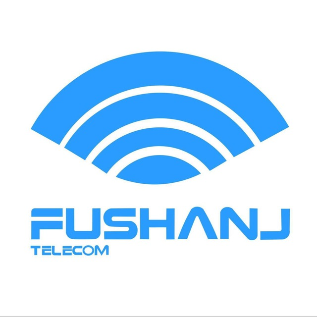

Sales Manager
Arya Alpha ICT
Sales activities at Arya Alpha ICT focus on helping customers choose suitable internet services and supporting company growth. Responsibilities include customer communication, lead follow-up, package presentation, and coordination with technical colleagues to align sales commitments with service delivery.
- Manage sales conversations and follow up with prospective and existing customers.
- Explain internet packages and service options clearly, helping customers choose suitable solutions.
- Coordinate customer requirements with technical and operations teams to support smooth activation and service.
- Maintain organized sales records and follow-up activity to strengthen customer relationships.
Combined customer support with network operations: resolved connectivity issues remotely, activated internet services, and supported PPPoE migrations through AAA systems while keeping disruption to a minimum. Responsibilities also covered billing, expense reports, payments, refunds, and proactive tower and access-point monitoring.
- Delivered remote technical support across provinces, improving service reliability and customer satisfaction.
- Managed internet activation, billing, expense reporting, and PPPoE user migrations through AAA systems with minimal downtime.
- Monitored towers and access points, helping reduce outages and security risks through proactive follow-up.
- Processed payments and refunds while maintaining accurate operational reporting.

Wireless Manager
Fushanj Telecom
Led the deployment and maintenance of reliable wireless connectivity across multiple sites at Fushanj Telecom. Designed wireless infrastructure, managed tower and access-point connectivity, and delivered point-to-point links using Mimosa and MikroTik, reaching up to 400 Mbps over 10 km. Ansible automation improved configuration consistency and reduced repetitive manual work.
- Designed and deployed wireless infrastructure, establishing reliable tower, access-point, and backbone connectivity.
- Implemented PTP links using Mimosa and MikroTik, delivering up to 400 Mbps over 10 km.
- Automated MikroTik configuration with Ansible to improve efficiency and reduce manual errors.
- Monitored and maintained network performance to support high availability and service stability.
Built ISP networking experience through deployment, support, and troubleshooting across multiple sites. Installed point-to-point and internet links, supported thousands of users, and implemented firewall, VPN, and QoS solutions to improve security and performance. Maintained clear incident records and documented cases in Odoo ERP/CRM.
- Deployed PTP and internet links across sites, expanding reliable network coverage.
- Provided connectivity support for 6,000+ users and resolved network issues.
- Implemented firewall, VPN, and QoS solutions for 500+ users to improve security and performance.
- Installed 100+ network devices and supported 7,000+ clients across ISP operations.
- Troubleshot ISP infrastructure and maintained accurate case documentation in Odoo ERP/CRM.